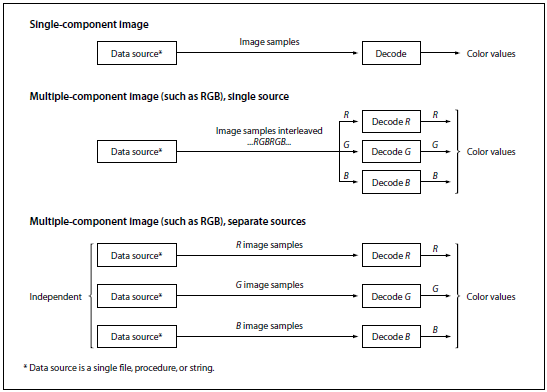

The source format for an image can be described by four parameters: width,
height, components, and bits/component. A
PostScript program specifies width, height, and bits/component
explicitly. The interpreter infers the components parameter as
follows:
With the five-operand form of the image operator and with imagemask, components is always
1.
With the one-operand (image dictionary) form of the image operator, components
is the number of components in the current color space (see Section 4.8, "Color Spaces").
With the colorimage
operator, components is specified explicitly as the ncomp
operand.
Sample data is represented as a stream of bytes, interpreted as 8-bit
integers in the range 0 to 255, obtained from some data source (either
returned from a procedure or read from a file or string). The bytes
constitute a continuous bit stream, with the high-order bit of each
byte first. This bit stream is in turn divided into units of bits/component
bits each, ignoring byte boundaries. Sample values of 12 bits straddle
byte boundaries; other sizes never do. Each unit encodes a color
component value, given with the high-order bit first.
Each row of the source image begins on a byte boundary. If the
number of data bits per row is not a multiple of 8, the end of the row
must be padded with extra bits to fill out the last byte. The
PostScript interpreter ignores these padding bits.
Each source sample component is interpreted as an integer in the range
0 to 2n - 1, where n is the number of bits per
component. The PostScript interpreter maps this to a color component
value (equivalent to what could be used with operators such as setgray or setcolor) by one of two methods:
With the five-operand form of image, and with all forms of colorimage, the integer 0 maps
to the number 0.0, the integer 2n - 1 maps to the number 1.0, and
intermediate values map linearly to numbers between 0.0 to 1.0.
With the one-operand (dictionary) form of image, the mapping is specified
explicitly by the Decode entry in the image dictionary.
The imaging operators (image, colorimage, and imagemask) can obtain sample
data from any of three types of object:
Procedure. Whenever the interpreter requires
additional sample data, it calls the procedure, which is expected to
return a string containing some more data. The amount of data
returned by each call is arbitrary. However, returning one or more
complete rows at a time simplifies programming, especially when
reading image data that appears in-line in a PostScript program. This
is the only type of data source permitted in LanguageLevel 1.
File. The interpreter simply reads data from the file
as necessary. Note that the file can be filtered to perform some kind
of decoding or decompression (see Section
3.8.4, "Filters"). This type of data source is a LanguageLevel 2
feature.
String. The interpreter simply reads data from the
string, reusing the string as many times as necessary to satisfy the
needs of the imaging operation. This type of data source is a
LanguageLevel 2 feature, though equivalent behavior can be obtained
in LanguageLevel 1 by providing a procedure that simply returns the
same string each time it is called.
Data sources for images are much the same as those for filters; for
further elaboration on their semantics, see Section 3.13.1, "Data Sources and
Targets." When reading from a data source causes a PostScript
procedure to be invoked, that procedure must not do anything to
disturb the ongoing imaging operation, such as alter the graphics
state or image dictionary or initiate a new imaging operation.
A data source can end prematurely. This occurs if a procedure
returns a zero-length string or a file encounters end-of-file. If a
data source ends before all samples have been read, the remainder of
the image that would have been painted by the missing samples is left
unpainted. If the last source row is incomplete—that is, if the
data source ends in the middle of a row—the partial source row
may be discarded and not painted.
When there are multiple color components per sample (the value
of components is greater than 1), the source data can be organized in
either of two ways:
Single data source. All color components are obtained
from the same source, interleaved sample by sample. For example, in a
three-component RGB image, the red, green, and blue components for
one sample are followed by the red, green, and blue components for
the next sample.
Multiple data sources. Each color component is
obtained from a separate source—for example, all red components
from one source, all green components from a second, and all blue
components from a third. If the data sources are strings, they must
all be of the same length. If they are procedures, they must all
return strings of the same length on any given call. The interpreter
calls each procedure in turn, in the order in which they are
specified as operands to the colorimage
operator or in which they appear in the image dictionary's DataSource
array. The procedures may read data from the same file, but they must
return their results in separate strings, since the interpreter does
not copy this data elsewhere in the course of assembling the values
for a single sequence of samples. If the data sources are files, the
interpreter may read unpredictable amounts of data from them in
unpredictable orders, so they must be completely independent of each
other—that is, they must not be the same file, nor filters that
ultimately read from the same file.
A PostScript program specifies which organization to use by means of
the multi operand of the colorimage
operator or the MultipleDataSources entry in the image
dictionary. Figure 4.22 illustrates some typical organizations for
data sources. It also shows the image sample decoding operation.

FIGURE 4.22 Image data organization and processing